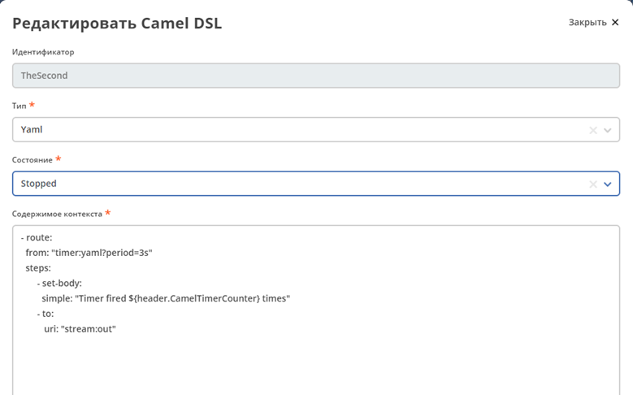
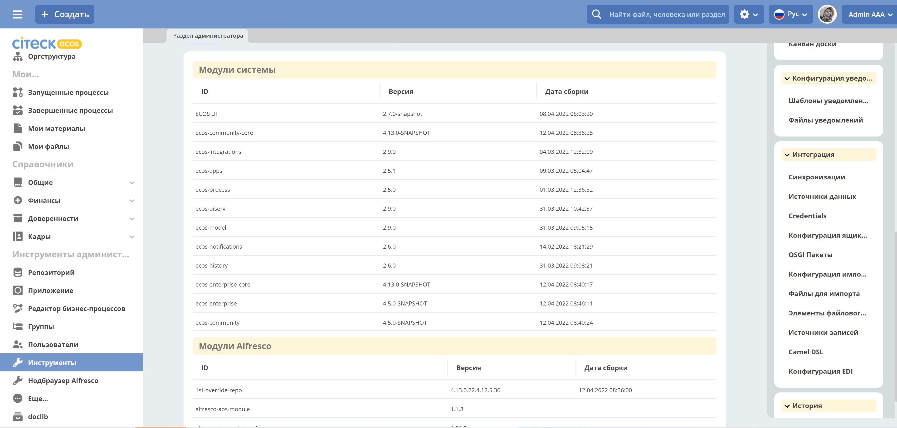
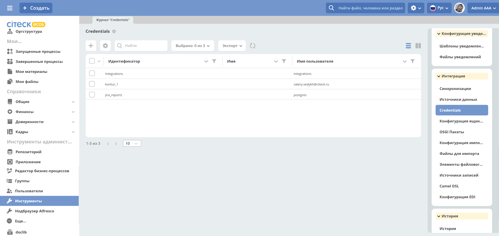
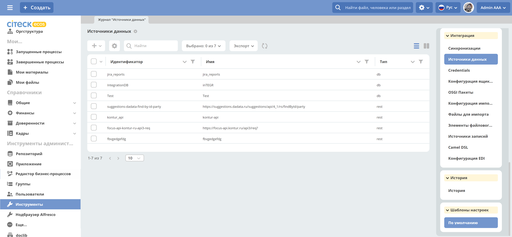
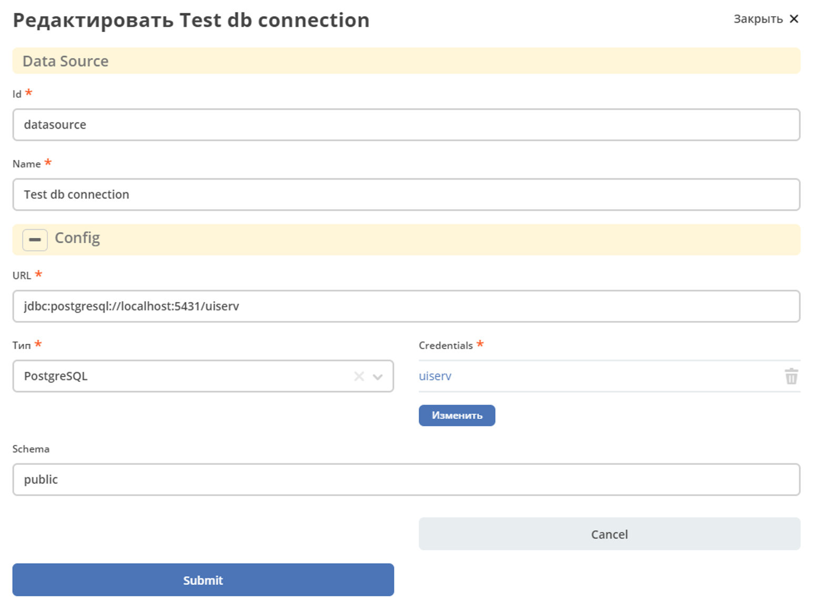
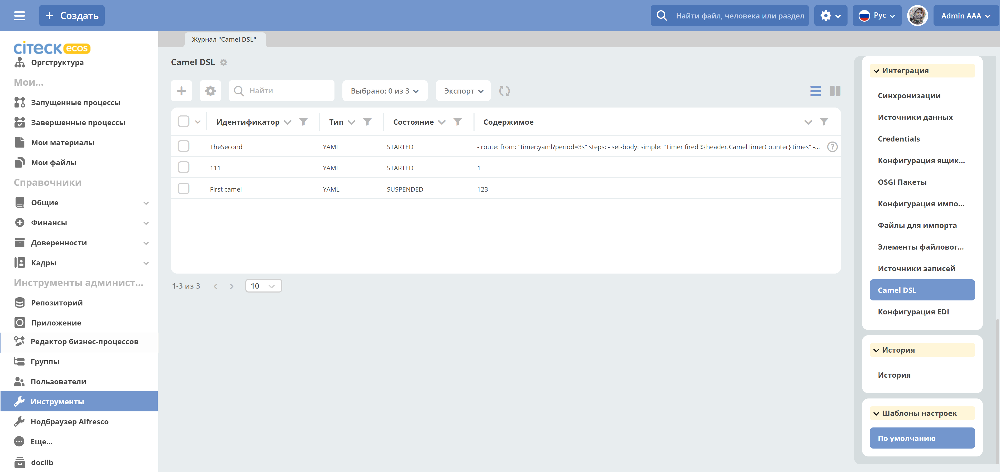

Использование Camel DSL
Общие сведения
Apache Camel — открытый кроссплатформенный java-фреймворк, который позволяет проводить интеграцию приложений в простой и понятной форме.
Camel использует доменные языки (Domain Specific Language - DSL) для описания проектных шаблонов интеграции или маршрутов.
В ECOS используется Yaml DSL для описания маршрутов в формате YAML и XML DSL.
Camel-контекст – главная сущность Camel. Контекст является контейнером среды выполнения Camel. Контекст предоставляет много полезных сервисов, наиболее значимыми являются маршруты, компоненты, языки, конверторы типов, реестр, endpointы и форматы данных.
Маршрут – определение интеграционного потока Например, для объединения двух систем маршрут определяет как именно эти системы взаимодействуют.
Компоненты - подробно описано по ссылке
Bean – для вызова методов Java-бинов, хранящихся в реестре;
Direct – вызывает другой endpoint из того же контекста синхронно;
Direct VM - вызывает другой endpoint из любого контекста на той же JVM синхронно;
File – читает и записывает файлы;
Timer – генерирует сообщения с определенным интервалом, используя java.util.Timer;
JDBC – предоставляет доступ к базам данных через JDBC;
Jetty – предоставляет endpoint на основе HTTP для получения и отправки HTTP запросов.
Пример контекста с маршрутом:
{kind=link}
Примечание
Атрибут = свойство = поле
Целевая БД = БД назначения = целевой источник данных – куда данные помещаются
Исходная БД = исходный источник данных – откуда данные берутся
Выборка из БД
Для выборки данных из БД необходимо:
Создать “Credentials” для подключения:
Главное меню: Инструменты администратора -> Инструменты
{kind=link}
Неосновное меню: Интеграция -> Credentials
{kind=link}
Создать “Источник данных” DB Data Source, в результате источник будет с типом db.
Главное меню: Инструменты администратора -> Инструменты
Неосновное меню: Интеграция -> Источники данных
 {kind=link}
{kind=link}
Создать “Camel DSL”
Главное меню: Инструменты администратора -> Инструменты
Неосновное меню: Интеграция -> Camel DSL
{kind=link}
Контекст Camel DSL должен содержать маршрут выборки из БД. Например:
- route:
from: "timer:start?delay=-1&repeatCount=1"
steps:
- set-body:
constant: "select * from actions"
- to: "jdbc:datasource"
- split:
simple: "${body}"
steps:
- to: "stream:out"
где
datasource – имя источника данных, созданного в п.2 при его использовании в маршруте нужно добавлять префикс «jdbc:»;
actions – имя таблицы БД, из которой делается выборка;
timer – таймер, который запускает маршрут delay=-1 - немедленно при старте контекста и только один раз repeatCount=1;
блок split разделяет результат выборки на строки, которые выводятся в трассу stream:out
Для выполнения содержимого контекста нужно изменить состояние Camel DSL на Started
Подключение RecordsDaoEndpoint
Для записи данных в RecordsDao в содержании контекста Camel DSL нужно описать RecordsDaoEndpoint. Для этого до маршрутов описывается секция beans. Например:
- beans:
- name: "recordsDaoEndpoint"
type: ru.citeck.ecos.integrations.domain.cameldsl.service.RecordsDaoEndpoint
properties:
sourceId: testDao
pkProp: id
columnMap:
name: content
state: currentState
type: type
valueConvertMap: |
{"type": {"*": "YAML"}, "state": {"1":"STARTED", "*": "STOPPED"}}
- route:
from: "timer:start?delay=-1&repeatCount=1"
steps:
- set-body:
constant: "select * from actions"
- to: "jdbc:datasource"
- split:
simple: "${body}"
steps:
- to: "bean:recordsDaoEndpoint"
Где
recordsDaoEndpoint – имя
RecordsDaoEndpoint, при его использовании в маршруте нужно добавлять префикс «bean:»;type – класс бина, всегда указывается ru.citeck.ecos.integrations.domain.cameldsl.service.RecordsDaoEndpoint
в секции properties описываются настройки
RecordsDaoEndpoint:- appName - целевой идентификатор приложения, например alfresco:
sourceId - целевой идентификатор источника данных, куда будут помещаться данные. Обязательное свойство;
pkProp – атрибут исходного источника, который является первичным ключом;
columnMap – соответствие атрибутов исходного источника и атрибутов назначения. В приведенном примере значение атрибута name из источника будет перекладываться в атрибут content назначения, state в currentState, type в type. Общий вид карты:
sourcePropName1: targetPropName1 sourcePropName2: targetPropName2 … sourcePropNameN: targetPropNameN чтоБерем: кудаКладем
valueConvertMap – карта преобразований исходных значений перед записью их в БД назначения. Карта пишется в формате JSON, символ „*“ означает любое значение атрибута. В приведенном примере перед записью в атрибут currentState значение поля state будет заменено на STARTED, если оно равно 1, и на STOPPED во всех других случаях. Таким образом, атрибут currentState в результирующей таблице будет содержать только два значения: STARTED или STOPPED. Общий вид карты:
{“sourcePropName1”: {“value1”:”resultValue1”, “value2”:”resultValue2”, … “valueN”:”resultValueN”}, “sourcePropName2”: {“value21”:”resultValue21”, “value22”:”resultValue22”, … “value2N”:”resultValue2N”}, … “sourcePropNameM”: {“valueM1”:”resultValueM1”, “valueM2”:”resultValueM2”, … “valueMN”:”resultValueMN”}}Так как valueConvertMap многострочное свойство, то перед значением необходимо указать символ «|».
В одном контексте может быть описано несколько RecordsDaoEndpoint.
- beans:
- name: "recordsTestDaoEndpoint"
type: ru.citeck.ecos.integrations.domain.cameldsl.service.RecordsDaoEndpoint
properties:
sourceId: recordsTestDao
pkProp: id
- name: "testDaoEndpoint"
type: ru.citeck.ecos.integrations.domain.cameldsl.service.RecordsDaoEndpoint
properties:
sourceId: testDao
pkProp: id
columnMap:
name: content
state: currentState
type: type
valueConvertMap: |
{"type": {"*": "YAML"}}
- name: "…"
…
RecordsDaoEndpoint также может обрабатывать данные полученные из XML-файла, CSV-файла или текстового файла, содержащего строковые представления Map.
Пример контекста, содержащего маршруты для обработки RecordsDaoEndpoint данных из файлов:
- beans:
- name: "recordsDaoEndpoint"
type: ru.citeck.ecos.integrations.domain.cameldsl.service.RecordsDaoEndpoint
properties:
sourceId: testDao
pkProp: id
columnMap:
name: content
state: currentState
delimiter: ","
- route:
id: "fromXmlFileToDb"
from: "direct:fromXmlFileToDb"
steps:
- split:
xpath: "//someObject"
steps:
- to: "bean:recordsDaoEndpoint"
- route:
id: "fromTxtFileToDb"
from: "direct:fromTxtFileToDb"
steps:
- split:
tokenize: "\n"
steps:
- to: "bean:recordsDaoEndpoint"
Маршрут fromXmlFileToDb делит входной XML-поток из файла на элементы someObject и передает их в RecordsDaoEndpoint.
Пример входного XML-файла:
<?xml version="1.0" encoding="UTF-8"?>
<massages>
<someObject id="50" usage ="Additional">
<name>Test route name James</name>
<purpose>Test endpoint</purpose>
</someObject>
<someObject id="210" usage ="Standard">
<name>Route 61</name>
<purpose>Test</purpose>
<city>Moscow</city>
</someObject>
</massages>
В приведенном примере для установки значений доступны атрибуты записи id, usage, name и purpose.
Маршрут fromTxtFileToDb делит входной текстовый поток из файла на строки. Пример CSV-файла:
id,name,value
10,SomeName,
908,- route:,additional
77,,
Пример файла со строковыми представлениями Map:
id=15, name=Test
id=64, name=Route, value=null
id=48, name=Open route, value=null
Для работы со строковыми данными используются настройки RecordsDaoEndpoint delimiter и keyValueSeparator.
* delimiter – определяет строку-разделитель значений в строке для CSV-файла и пар ключ-значение для строкового представления Map, по умолчанию значение «,»
* keyValueSeparator – определяет строку-разделитель ключа и значения в строковом представлении Map, по умолчанию значение «=»
Удаление данных из БД
Для удаления данных из БД необходимо создать Credentials, Источник данных и Camel DSL как указано в пункте «Выборка из БД». При этом, содержимое маршрута должно включать в себя SQL-запрос на удаление данных.
Например, следующий маршрут clearValues удаляет все записи из таблицы simple источника данных datasource, кроме тех у которых атрибут id равен „1“ или „2“.
- route:
id: "clearValues"
from: "timer:start?delay=-1&repeatCount=1"
steps:
- set-body:
constant: "delete from simple where id not in ('1','2')"
- to: "jdbc:datasource"
Пример контекста, который берет данные из источника данных todb, обрабатывает их через R`RecordsDaoEndpoint`` daoEndpoint и очищает таблицу simple, из которой взял данные:
- beans:
- name: "daoEndpoint"
type: ru.citeck.ecos.integrations.domain.cameldsl.service.RecordsDaoEndpoint
properties:
sourceId: testDao
pkProp: id
columnMap:
name: content
state: currentState
type: type
- route:
id: "getValues"
from: "timer:start?delay=-1&repeatCount=1"
steps:
- set-body:
constant: "select * from simple"
- to: "jdbc:todb"
- split:
simple: "${body}"
steps:
- to: "bean:daoEndpoint"
- to: "direct:clearValues"
- route:
id: "clearValues"
from: "direct:clearValues"
steps:
- set-body:
constant: "delete from simple"
- to: "jdbc:todb"
Примечание
Особенности контекста: Содержимое constant переводится в нижний регистр. Например, выборка «select * from simple order by COMPANY_ID» приводит к ошибке ERROR: column «company_id» does not exist